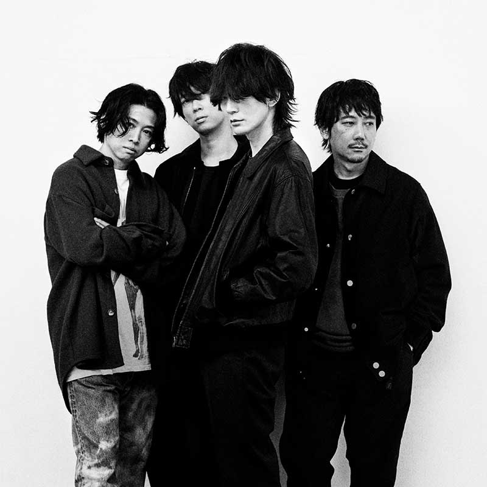
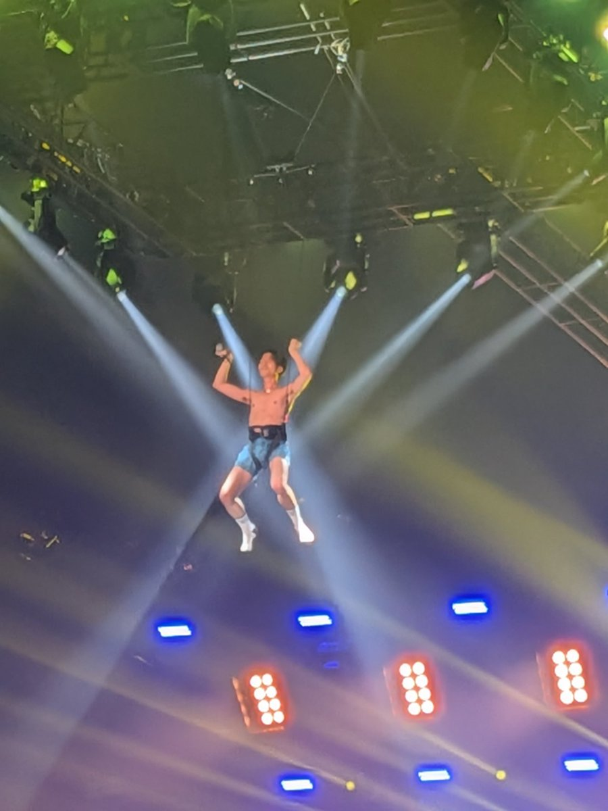

好きなアーティスト
BUMP OF CHICKEN

独特な歌詞とメロディで長年支持されているロックバンド。
日常の感情や風景を切り取ったような楽曲が多く、聴く人によってさまざまな受け取り方ができるのが特徴。
優しくも力強い世界観と、物語のように紡がれる歌詞が魅力。
好きな曲
話がしたいよ
窓の中から
透明飛行船
SKRYU

高いラップスキルと最高のライブパフォーマンスで注目を集めるラッパー。
勢いのあるフロウだけでなく、言葉選びやリズム感にも強い個性があり、一度聴くと耳に残る楽曲が多い。
熱量の高い音楽と独自のスタイルで、多くのリスナーを惹きつけている。